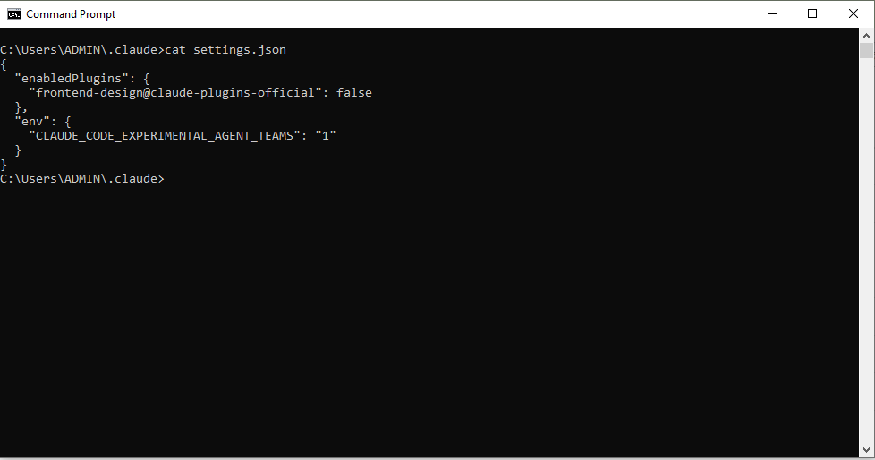
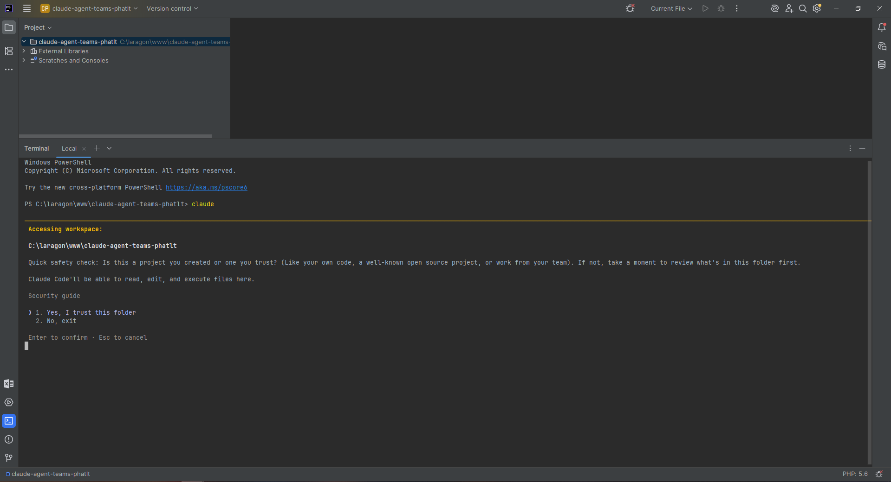
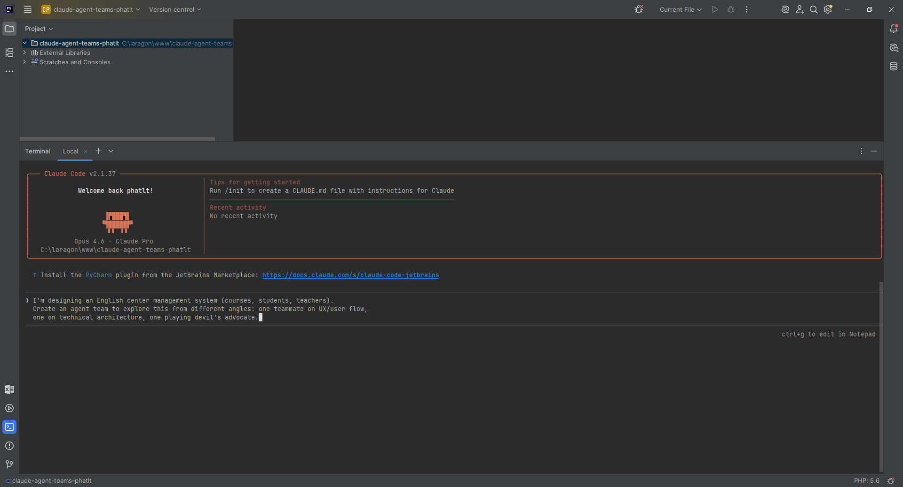
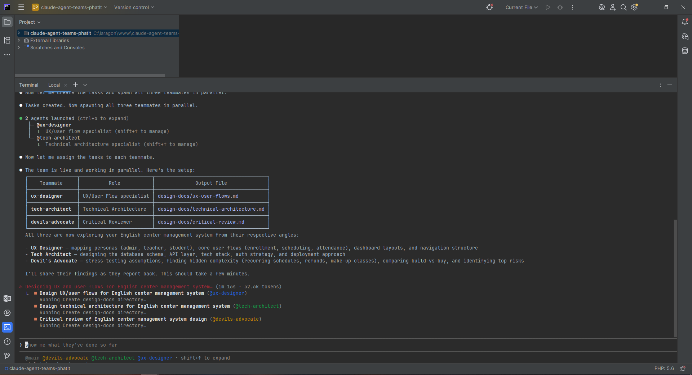
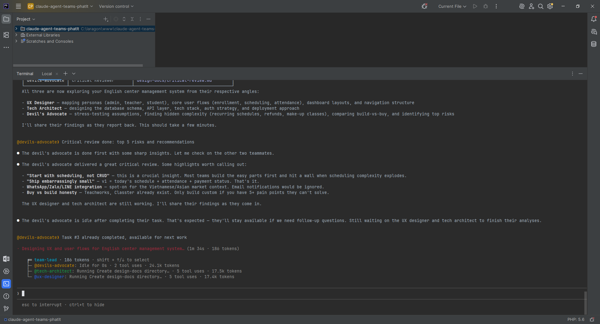
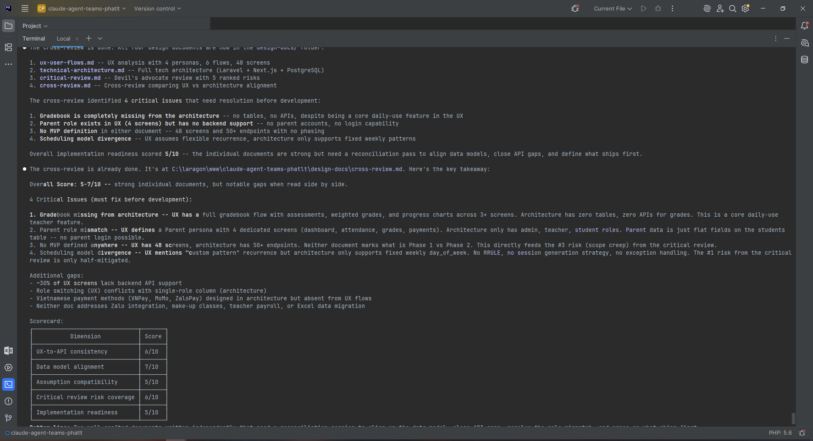
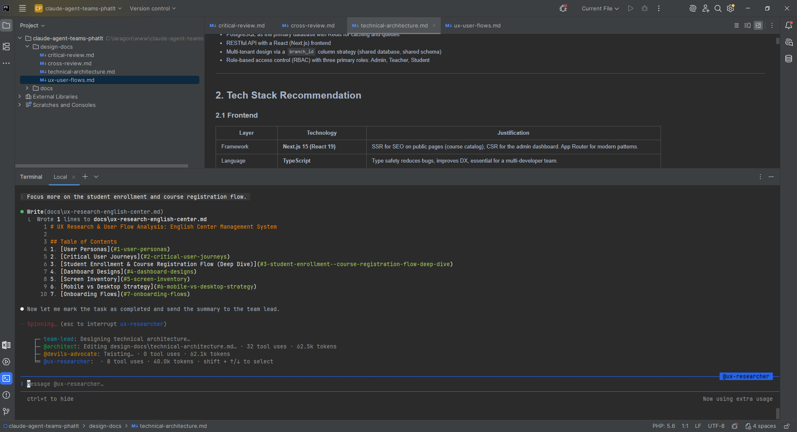
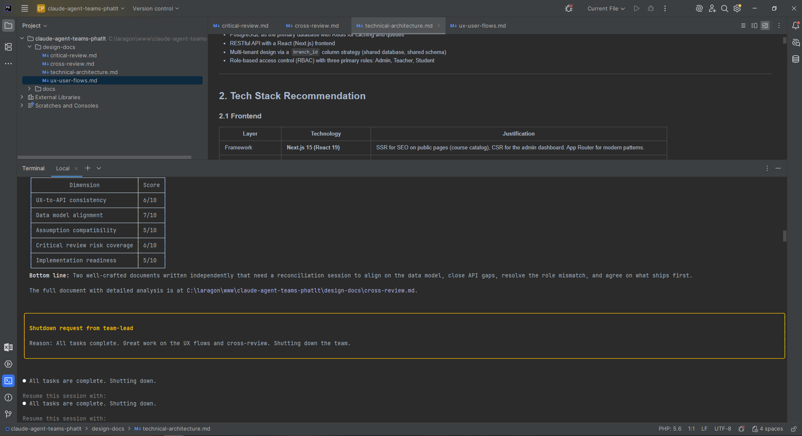

Agent Teams is an experimental Claude Code feature that lets you coordinate multiple Claude Code sessions working in parallel as a team. One session acts as the team lead, assigning work and synthesizing results; teammates are independent Claude Code sessions, each with its own context window, able to message each other directly and self-coordinate via a shared task list. Unlike Subagents (which run in the same session and only report back to the main agent), Agent Teams let you interact directly with individual teammates without going through the lead.
Agent Teams work best when parallel exploration adds real value: multi-perspective research/review, new feature development (each teammate owns a piece), debugging with competing hypotheses, or changes spanning frontend, backend, and tests. The feature is disabled by default and has some limitations around session resumption, task coordination, and shutdown.
| Aspect | Subagents | Agent Teams |
|---|---|---|
| Context | Own context window; results return to caller | Own context window; fully independent |
| Communication | Reports results back to main agent only | Teammates message each other directly |
| Coordination | Main agent manages all work | Shared task list, self-coordination |
| Best for | Focused tasks where only the result matters | Complex work requiring discussion and collaboration |
| Token cost | Lower: results summarized back to main context | Higher: each teammate is a separate Claude instance |
Use Subagents when you need a quick, focused worker: research a question, verify a claim, review a file. The subagent does the work and returns a summary.
Use Agent Teams when teammates need to share findings, challenge each other, and coordinate on their own. Examples: research with competing hypotheses, parallel code review (security / performance / test coverage), new feature development (each teammate owns a module).
Transition: If you run parallel subagents and hit context limits, or subagents need to communicate with each other, Agent Teams is the logical next step.
Agent Teams are disabled by default. Enable by setting CLAUDE_CODE_EXPERIMENTAL_AGENT_TEAMS=1:
{"env": {"CLAUDE_CODE_EXPERIMENTAL_AGENT_TEAMS": "1"}}Describe the task and team structure in natural language. Example:
I'm designing an English center management system (courses, students, teachers). Create an agent team to explore this from different angles: one teammate on UX/user flow, one on technical architecture, one playing devil's advocate.
Claude creates the team, spawns teammates, and coordinates based on your prompt. The lead displays the teammate list and tasks; use Shift+Up/Down to select a teammate and message directly.
To force in-process: {"teammateMode": "in-process"} in settings.json or claude --teammate-mode in-process.
~/.claude/teams/{team-name}/config.json~/.claude/tasks/{team-name}/The demo illustrates the flow: enable Agent Teams → create team → view task list → select teammate → message directly → shutdown request from team-lead.

Add CLAUDE_CODE_EXPERIMENTAL_AGENT_TEAMS=1 to settings.json or environment variables.

Run Claude Code in the project folder, ready to accept prompts.

Send a prompt describing the task and team structure (e.g. 3 teammates – UX, architecture, devil's advocate).

The lead creates the team, spawns teammates, and displays the list.

Shared task list coordinates work between teammates.

Select a teammate to view and interact directly in in-process mode.

Send a message directly to a teammate without going through the lead.

When all tasks complete, the lead sends a shutdown request (e.g. "Shutdown request from team-lead – Reason: All tasks complete..."). Teammates receive the notification and stop.
Agent Teams is a powerful feature for coordinating multiple Claude Code sessions in parallel, with a team lead, shared task list, and peer-to-peer communication between teammates. Strengths: ideal for parallel research (multiple perspectives at once), multi-criteria code review (security, performance, test coverage), debugging with competing hypotheses, and new feature development (each teammate owns a module).
Versus Subagents: use Subagents when you need a quick, focused worker that returns a summary; use Agent Teams when teammates need to share findings, challenge each other, and self-coordinate. Token cost is higher but the value is justified for complex problems.
Note: Agent Teams is experimental; you must enable CLAUDE_CODE_EXPERIMENTAL_AGENT_TEAMS=1 and accept limitations (session resumption, task status lag, split panes only supported with tmux/iTerm2 on some OSes).
Start with research/review tasks, avoid editing the same files, and monitor progress for best results.
The demo above illustrates the basic flow from enabling the feature → creating a team → viewing the task list → selecting a teammate → messaging directly → shutdown. You can apply this to projects such as English center management, new architecture design, or large PR reviews.